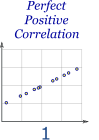
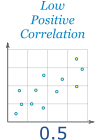
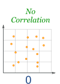
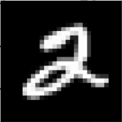
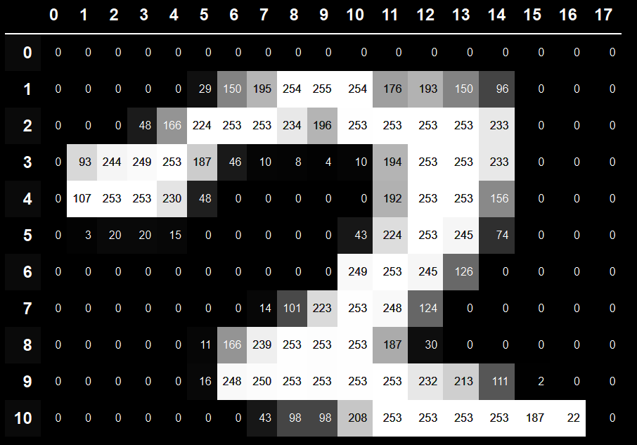

Applied Machine Learning for Senior Leaders
Today…
- Solve a prediction challenge
- Explore and understand our data with Python
- Think about how our data is connected, and test our theories
- Use our findings to build our first model, and see how it performs
- Use our model to make predictions
Our Data, and our Challenge
- We’ve built a fake dataset
- Each row represents a benefit claimant, that has been suspected of fraud, over the last 12 months
- Divided into:
- a training dataset (270 individuals) where a human has manually verified whether fraud was commited
- a test dataset (30 indivuals) where we’ll aim to predict whether or not fraud was committed
- Can we build a model to predict whether claimants have comitted fraud?
Relationships in our data - Correlation
- To make a model, we need to understand how one variable in our data is affected by the others
- A good place to start is with correlation
- Correlation is a statistical measure of how much two things are related to each other, whether they increase or decrease together, or if there is no relationship at all.
Examples of Correlation
- How well is a person’s age in years correlated with…

- their age in months

- their income

- the length of their name
Let’s code it!
Building our first regression
model = smf.ols(formula='years_in_labour_force ~ age', data=df)
results = model.fit()
results.summary()- For now, we’ll focus on our R-squared value
Understanding R-Squared
- R-squared is a measure that tells us how well our data fits our model
- I like thinking of it as how “good” our model is, in percentage terms
- So a model with a R-squared of 1.0 fits 100% of our data, while 0.5 would fit 50%
- It’s a little like correlation…but with a lot more potential!
Regression Example - Restaurant Bills
- How does it change when we add features?
Making our predictions
- Now we have our model, how do we make predictions?
- We just pass it our test data!
| committed | prediction | |
|---|---|---|
| person_id | ||
| 203 | 1 | 0.84 |
| 266 | 1 | 0.58 |
| age | committed | prediction | |
|---|---|---|---|
| person_id | |||
| 42 | 29.50843 | 1 | True |
| 281 | 50.42585 | 1 | True |
| 295 | 29.02093 | 0 | True |
| 157 | 34.13484 | 1 | True |
| 238 | 33.00470 | 1 | True |
From here… to AI!
- We’ve understood how our data connects, and combined it into a model
- The same core methods and principles apply to both what you’ve done today, and cutting edge AI




Thank you!
avarotsis@no10.gov.uk